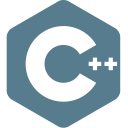
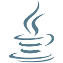

I study Computer Engineering at the University of Girona. I enjoy understanding how technology works and applying what I learn to practical projects. I would like to specialise in cybersecurity and cloud engineering.
View my projectThe Internet has always seemed almost magical to me. Learning about networks and cybersecurity helps me understand what happens behind the scenes: how systems communicate and how they can be protected. I want to keep exploring this less visible side of technology.
University of Girona
In progress
Institut de Santa Coloma de Farners
2022–2024
Programming and web development skills I am continuing to develop.


Personal project · Summer 2026
Developed and installed an IoT system that automatically controls ventilation after prayer times at a mosque in Santa Coloma de Farners. Built C++ firmware that retrieves schedules from an external API over HTTPS, maintains time with an RTC and NTP, and provides a local web interface for monitoring and configuration. Integrated relay and contactor control, manual operation and fault-recovery mechanisms.
Crominox · June–August 2024
Native
Native
Native
Upper-intermediate
Upper-intermediate